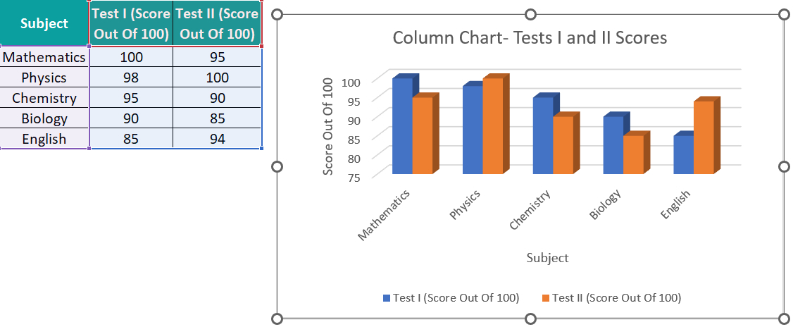
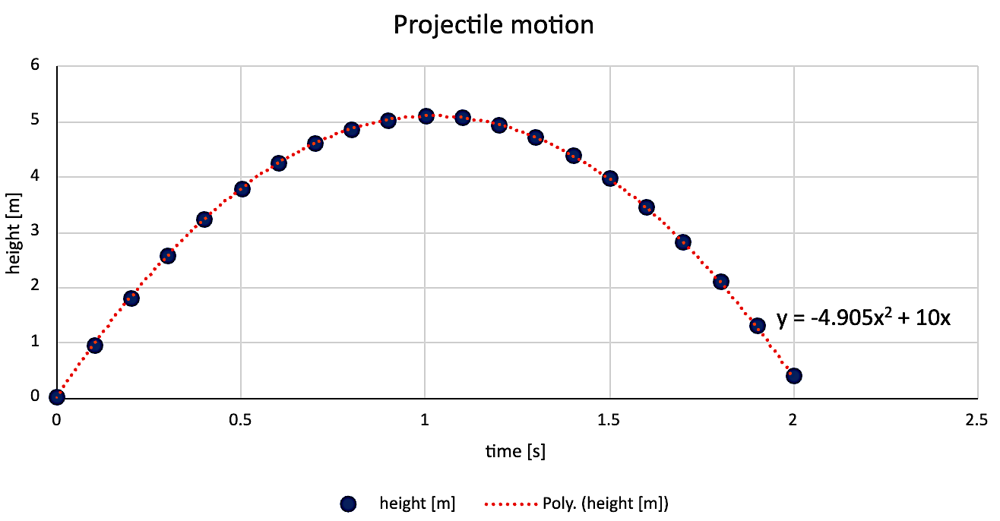
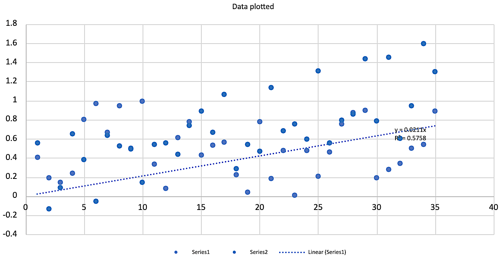

Quantitative Reasoning
1015SCG
Lecture 7
Modes of scientific
argumentation
Modes of scientific argumentation
- Inductive reasoning
- Deductive reasoning
- Abductive reasoning
Modes of scientific argumentation
- Inductive reasoning:
- rules from observations or experiences;
- generalisation;
- poor at truth preserving;
- can lead to undesirable outcomes
Inductive reasoning: Experiences (A) imply a general rule (B)
🧐 Examples
- Every time I eat spicy food, I get a
stomach-ache.
Therefore, spicy food causes stomach aches (for me). - Every sheep I have seen is white.
Therefore, all sheep are white.
🧐 Examples
- If I drop a 🔨 hammer, it falls downwards.
- If I drop a 🍛 plate, it falls downwards.
- If I dive into a pool, I fall downwards
- Therefore, things fall downwards
Modes of scientific argumentation
-
Deductive reasoning:
- developing rules based on already known rules;
- conclusions narrower than underlying rules;
- easier to correct;
- starting point — where do we get assumptions?
Deductive reasoning: Assumptions (A) imply logical consequence (B)
🧐 Examples
-
All 🐕 dogs have ears,
golden retrievers are dogs,
therefore they have ears. - All racing cars must go over 80MPH, the Dodge Charger is a racing car, therefore it can go over 80MPH.
- All mammals have backbones. Humans are mammals. Therefore, humans have backbones.
Modes of scientific argumentation
- Abductive reasoning:
- simplest set of rules that describe all observations;
- Occam's Razor
Abductive reasoning: All our experiences (A) imply the simplest general principles
🧐 Example
- While I was reading in bed last night, I started hearing scratching sounds coming from the ceiling. Then, this morning, I noticed there were tiny little droppings on the kitchen floor. I'm pretty sure we have a mice infestation at our house.
Fallacies
- Fallacy is a false belief
- Formal/logical fallacy
- Informal fallacy
Example:
If it is raining, the ground will be wet.
The ground is wet.
Therefore, it must be raining.
Implications
- A implies B: A ⇒ B
- If A is true, then B is true as well.
- Example:
If it is raining, then the ground is wet.
Implications: Chain rule
We can chain implications:
- If A ⇒ B and B ⇒ C, then A ⇒ C.
- Example:
If it is raining, then the ground is wet.
If the ground is wet, then Monty does not want to go out.
Hence, if it is raining, then Monty does not want to go out.
📝 Practice
Consider the following statements:
- To be President of the US, you must have been born in the US.
- Anyone born in the US is an American citizen.
Are the following statements true?
- Any American citizen can become President of the US?
- Any President is an American citizen?
Sufficient condition
- A ⇒ B means A is a sufficient condition for B.
- If A is true, B must be true.
- But B true does not imply A true.
- Example:
If I live in Gold Coast, then I live in Australia.
Necessary condition
- B ⇒ A means A is a necessary condition for B.
- B cannot be true unless A is also true.
- Example:
If you pass the exam, then you had sat the exam.
Necessary and Sufficient conditions
- If A is both necessary and sufficient for B: A ⇔ B
- A ⇔ B can be also written as A iff B (iff short for if and only if)
- Example:
A quadrilateral is a square ⇔ it has four equal sides and four right angles.
A quadrilateral has four equal sides and four right angles ⇔ it is a square.
Necessary and Sufficient conditions
Relationships between statements A and B:
- A necessary but not sufficient for B.
- A sufficient but not necessary for A.
- A equivalent to B (A is both necessary and sufficient for B).
- A neither necessary nor sufficient for B.
Logical relationships between statements \(A\) and \(B\)
| Relationship | Symbolic form | Notes / equivalent |
|---|---|---|
|
A necessary but not sufficient for B |
\( (B \Rightarrow A)\;\land\;\lnot(A \Rightarrow B) \) |
B implies A, but A does not imply B. |
|
A sufficient but not necessary for B |
\( (A \Rightarrow B)\;\land\;\lnot(B \Rightarrow A) \) |
A implies B, but B does not imply A. |
| A equivalent to B |
\( A \iff B \) (or \( (A\Rightarrow B)\land(B\Rightarrow A) \)) |
Both implications hold: A iff B. |
|
A neither necessary nor sufficient for B |
\( \lnot(A \Rightarrow B)\;\land\;\lnot(B \Rightarrow A) \) | Neither implication holds. |
Note: The symbol "\(\,\lnot\,\)" means "not".
📝 Practice 😃: Necessary and/or Sufficient
- a) Watering a plant is a ______ condition for the plant to grow
- b) Getting $\geq 50\%$ in SUP is a ______ condition for passing
- c) Winning numbers ticket is a ______ condition for winning lotto
- d) Getting a degree is a ______ condition for making lots of money
Examples of logical flaws
- A ⇒ B then B ⇒ A (invalid)
If it is raining then the ground is wet.
Does not imply that: If the ground is wet then it is raining.
- A ⇒ B then not A ⇒ not B (invalid)
If it is raining then the ground is wet.
Does not imply that: If it is NOT raining then the ground is dry.
- Both A and B can not be true. If A is not true,
then B must be true.
If you are not with us, you are against us.
Contrapositives
- A ⇒ B is equivalent to not B ⇒ not A (\(\lnot B \Ra \lnot A\)).
Example:
Consider the statement: When it is raining, the ground is wet.
Which of the following is logically consistent with this statement?
- When the ground is wet, it is raining
- When it isn't raining, the ground isn't wet
- When the ground isn't wet, it isn't raining.
📝 Putting it all together
- If you get $\geq$ 50% in your marks throughout the trimester, you pass QR.
- If you get $\lt$ 45% in your marks throughout the trimester, you fail QR.
- To qualify for a SUP exam, you must get $\geq $ 45% in your marks throughout the trimester and submit all your assessment.
- If you get >50% in your SUP for QR, you pass QR.
Are the following statements true?
- If you passed QR, you got $\geq$ 50% in your marks throughout the trimester
- If you don't submit all your assessment, you can't get a SUP
- If you failed QR, you got $\gt$ 50% in your marks throughout the trimester
Informal fallacies
|
|
Is it TRUE or FALSE?
This statement is FALSE
If it is true, then it must be false;
if it is false, then it must be true.
Therefore, it cannot be classified as either true or false. 🤯
This is known as:
- A self-referential paradox
- The Liar Paradox
Is it TRUE or FALSE?
This statement is FALSE
It cannot be classified as either true or false

Assignment Presentation

Presentation - assignments, exams, homework…
- How you present your work matters:
- It affects understanding and marks.
- In many cases showing working is as important as your final result
- A wrong final answer doesn't mean your work is useless if your reasoning is clear.
- It shows how well you understand the ideas involved.
- You are responsible for presenting your solutions clearly; markers are not required to interpret unclear or incomplete work.
Presentation
- If you use software, say what you used (e. g. Excel, WolframAlpha, Python, etc. ).
- If you use built-in functions from a specific software,
state which ones and on what data.
Example: "I have used STDEV.S function on the number of possums data to find the standard deviation."
Presenting plots
- Use descriptive axis labels with units.
- Choose appropriate plot type.
- Data points - Scatter plot
- Line of best-fit (other functions) - line
- Use different colours so they can be distinguished
- Include clear legend if needed.
- Ensure legibility (labels & numbers must be readable, plots should be a suitable size).
- Include title or caption with equation and $R^2$ (Pearson coefficient) if applicable.
Example (Good) ✅

Example (Bad) ❌

That's all for today!
See you in Week 8!